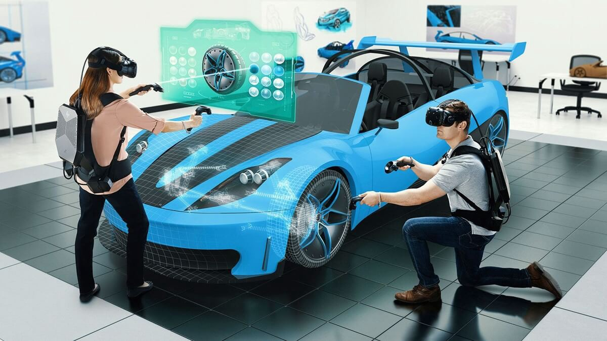

VR_Y_HYPER
VR content drives you to an eye-popping experience. Our VR development services enhance business appearance by converting ideas into reality with a disruptive technology and programming solutions. We are the best virtual reality development company that can give a new dimension to your project. At VR_Y_HYPER Software, we believe in delivering the VR software, apps, and web-based VR solutions beyond expectations. We offer a wide range of virtual reality software development services to evolve your business and outshine your competitors. These include VR games development, mobile and web VR development, consultation, support, and maintenance.
We offer you custom VR services to satisfy all your business-related needs and transform the ideas into the advanced technology. Our VR app development company provides a comprehensive set of solutions, starting with a proof of concept all the way through the development stages and, ultimately, product release. In addition to top-quality VR programming, you will have access to industry-insider information and know-how to make sure that all of the processes are properly aligned and coordinated.
Augmented Reality acts as the bridge between the illusory and real world by amplifying the object features of the real world. It offers vast scope and endless opportunities to turn almost anything to everything. VR_Y_HYPER Software provides augmented reality development services which transform the data into actionable insights to supplement the physical world. Our augmented reality company develops AR games, apps and custom software as well as other innovative solutions for different industries including healthcare, finance, retail, education and many more.
Our AR company will help you to leverage the brand value with creative application development or webAR solution. We can transform the innovative and impressive ideas into user-friendly augmented reality app to increase customer engagement rates. Our augmented reality programming company provides customer-oriented strategies and engagement models with cross-platform compatibility. Implement augmented reality into your business and watch how technology will boost it with productive user interaction, enhanced sales cycle, and revenue.

Web XR
The XR stands for “Extended Reality” which intended to include AR, VR and all other immersive technologies such as mobile devices with positional tracking or fixed display with head tracking abilities.
WebXR is a new API standard for web developers to create VR or AR applications without having to deal directly with each hardware. Users can use only web browser to start viewing VR/AR content without having to install extra plugins or software. Developers can write the code once and it will work with all devices from different brands (Oculus, Vive, Windows Mixed VR, etc.)
WebXR was introduced in 2018 and now being included in Chrome version 79 (WebVR is also removed) Based on MDN, the keys capabilities of WebXR are as follow (but not limited to)
Most (if not all) of applications will be using WebGL as 3D rendering engine and Web Audio API for sounds. The output will be rendered into HTML canvas.
Scan or click on the QR code below to see some examples of WebXR. You may be required to use a smartphone while visiting the page.
This is Why Your Business Should Use Virtual Reality
Virtual Reality is a growing technology and it can be seen in various fields like entertainment, art, business, etc. Everyone today is trying to include virtual reality technology in their respective fields of business and it has also become an essential thing to remain in the competition.
Including virtual reality in your business can enhance your business to a greater extent as it has many good qualities. Below are some reasons mentioned because of which virtual reality can be a game-changer in your business.
So if you want to include your business in the race of development then you should have virtual reality in your business. Mostly the buyers will enjoy and find it cool for trying the products online especially for stuff like cosmetic jewellery, furniture, eyewear, etc.
VR Will Help in Promoting Hotels, Tourism, RESORTS ETC
If you have a tourism business and willing to grow it then you should read the section below.
Virtual reality helps in providing the promo videos that boost tourist attractions and its interests and it also boosts the facilities that a resort or hotel can offer. Virtual Reality will help you increase your bookings and that will indirectly help you in increasing your business.
VR a Big Change in the Automobile Industry
If you have an automobile industry then you know that only a few models are kept in display and it is also difficult to show all the models to a particular customer. Also if the customer is confused between two or three-car then it is very difficult and it will be A wastage of time to take the drive of all three and check all the features of three and choose one. So to decrease the effort of your and increase the options for customers, virtual reality has given great advantage as it views the car in a 360-degree view. So that the customer can take test drives, select the exterior/interior, explore features, switch on lights, explore the accessories, etc this all through interactive experiences. If you give this experience to your customers then surely you will increase your business. 
Virtual Reality in Marketing Research
If you are a marketing researcher then you might be knowing that there are many difficulties in making the final product and fulfil the requirements of the project stakeholders. As they always have changed even if we give them our final products. So to overcome this VR provides a simulation. That helps the project stakeholders to study, suggest if any changes or fixes are required, this all at an early stage so that you don’t have to suffer after the product is ready and make the changes.
Using VR will help in saving both times as well as cost and will also help in an as successful product launch.
The toughest thing that most of the business people face today:
The important and the toughest thing that most of the business plan face is how they should train their employees. If you want your employees to be trained well and in an industrial way then you should include the VR training. We all know that proverb “Tell me, I’ll remember. Involve me, I’ll understand”. Hence you should give your employees the training in which they get involved in.
For this you can involve VR techniques, which will give you 3D experiences, and also will help your employees providing them real-world experience and real-world business problems. Using VR technology for training will train them with simulation and make them business-friendly and ready.
Hence seeing the above parameters, now you have to decide that isn’t virtual reality necessary for your business.
How Virtual Reality is being used today
Unsurprisingly, the video games industry is one of the largest proponents of Virtual Reality. Support for the Oculus Rift headsets has already been jerry-rigged into games like Skyrim and Grand Theft Auto, but newer games like Elite: Dangerous come with headset support built right in. Many tried-and-true user interface metaphors in gaming have to be adjusted for VR (after all, who wants to have to pick items out of a menu that takes up your entire field of vision?), but the industry has been quick to adapt as the hardware for true Virtual Reality gaming has become more widely available.
♦Virtual Reality and data visualization
Scientific and engineering data visualization has benefited for years from Virtual Reality, although recent innovation in display technology has generated interest in everything from molecular visualization to architecture to weather models.
♦VR for aviation, medicine, and the military
In aviation, medicine, and the military, Virtual Reality training is an attractive alternative to live training with expensive equipment, dangerous situations, or sensitive technology. Commercial pilots can use realistic cockpits with VR technology in holistic training programs that incorporate virtual flight and live instruction. Surgeons can train with virtual tools and patients, and transfer their virtual skills into the operating room, and studies have already begun to show that such training leads to faster doctors who make fewer mistakes. Police and soldiers are able to conduct virtual raids that avoid putting lives at risk.
♦Virtual Reality and the treatment of mental illness
Speaking of medicine, the treatment of mental illness, including post-traumatic stress disorder, stands to benefit from the application of Virtual Reality technology to ongoing therapy programs. Whether it’s allowing veterans to confront challenges in a controlled environment, or overcoming phobias in combination with behavioral therapy, VR has a potential beyond gaming, industrial and marketing applications to help people heal from, reconcile and understand real-world experiences.